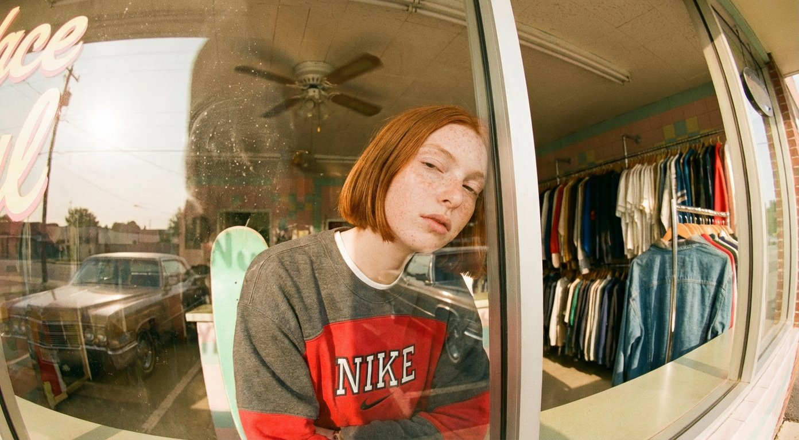

Campaign Vol. I
Full catalog photoshoot and visual identity — concept to delivery — completed in days. 40+ final assets across formats for Auren Collection, a St. Moritz based designer outlet, replacing a 3-week traditional shoot.

Sundae Social / Beyond the Rack
A full campaign bible on AI creative direction for the modern vintage shop. Analog Slacker aesthetic, 16mm fisheye, Kodak Tri-X 400. A curated field-guide to the Netherlands' finest second-hand shops, shot and directed through the Koboku lens.

Product World
A complete interior design location built entirely through AI — the result of a persona analysis for a luxury bespoke tailor targeting Florence's high society. Total turnaround: 4 hours.

Brand Retainer
Ongoing monthly visual content for the Florence based bespoke tailor "Flo and Flo". 30+ assets per month — photography, video, motion — with a consistent visual identity.

Visual System
AI-assisted brand identity and visual strategy for a Florence based jewelry brand. Full style system delivered in one day.

Editorial Series
12-image editorial series for a Hong Kong based luxury outlet e-commerce, shot and directed entirely through AI creative direction.